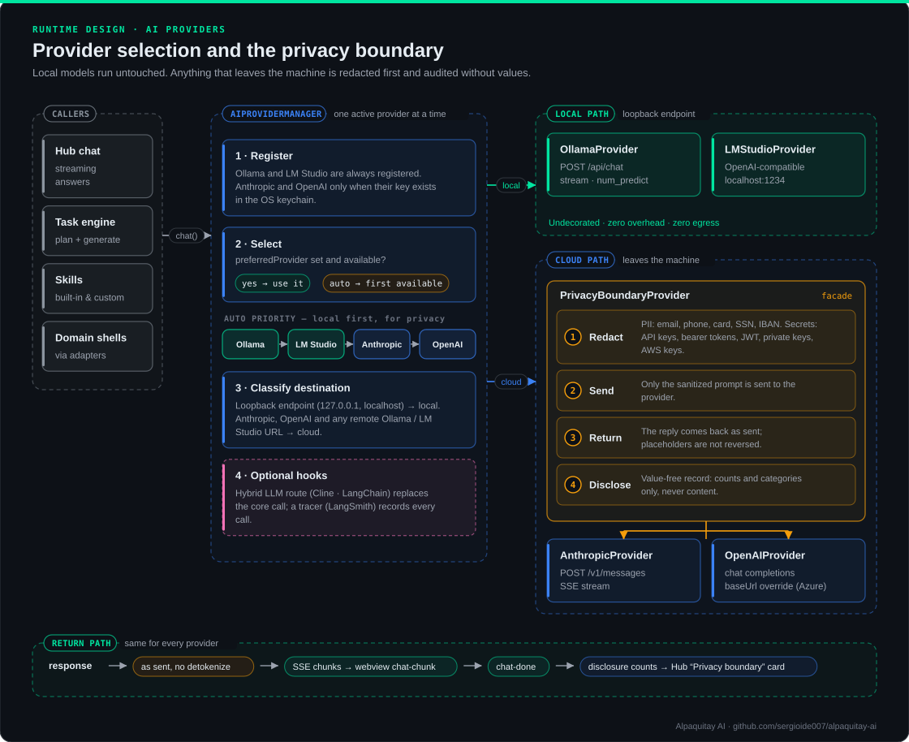
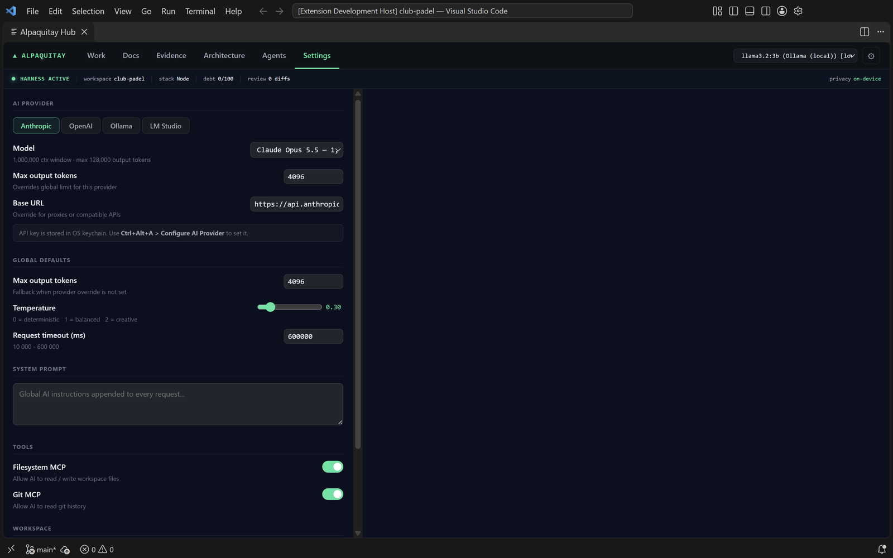

Capítulo 02
Proveedores de IA y privacidad
Alpaquitay no trae un modelo propio en la nube ni pasa tus datos por un servidor suyo. Tú eliges quién responde: un modelo en tu equipo o una API en la nube a la que la extensión llama directamente.
Los cinco proveedores
| Proveedor | Dónde corre | Privacidad | Coste | Cómo se activa |
|---|---|---|---|---|
| Ollama | Tu equipo | Todo en local | Gratis | Instala Ollama y descarga un modelo (ollama pull <modelo>). Se detecta en http://localhost:11434. |
| LM Studio | Tu equipo | Todo en local | Gratis | Carga un modelo en LM Studio y arranca su servidor local. Se detecta en http://localhost:1234. |
| Modelo local (WebGPU) | Dentro de VS Code, en tu GPU | Todo en local (solo descarga una vez el modelo firmado) | Gratis | alpaquitay-ai.localEngine.enabled: true. Ver Motor local. |
| Anthropic Claude | Nube de Anthropic | Llamada directa, con límite de privacidad | Precio de la API | Clave de API en el llavero del sistema. |
| OpenAI | Nube de OpenAI (o Azure OpenAI) | Llamada directa, con límite de privacidad | Precio de la API | Clave de API en el llavero del sistema. |
Cómo elige el modo auto
Con alpaquitay-ai.preferredProvider en auto (el valor por defecto), Alpaquitay usa el primero disponible en este orden:
- Ollama
- LM Studio
- Modelo local (solo si lo activaste con
localEngine.enabled) - Anthropic (solo si guardaste su clave)
- OpenAI (solo si guardaste su clave)
Es decir: local primero. Si prefieres uno concreto, ponlo en preferredProvider (ollama, lmstudio, local-wasm, anthropic u openai); si ese no está disponible, se vuelve al orden anterior. También puedes cambiar de modelo en cualquier momento con el selector de la cabecera del Hub.
Conectar un modelo local
Ollama
# Instala Ollama desde https://ollama.com y luego:
ollama pull qwen2.5-coder
# Otros que funcionan bien para código: llama3.2, deepseek-coder, codellama
En Settings → AI Provider → Ollama escribe el nombre del modelo (por defecto codellama) y, si hace falta, el endpoint.
LM Studio
Carga cualquier modelo GGUF en LM Studio y pulsa Start Server. Alpaquitay usa el modelo que tengas cargado allí; no hay que elegirlo en la extensión.
Modelos pequeños
Los modelos de menos de unos 4 000 millones de parámetros (nombres con 1.3b, 3b, mini, nano, gemma:2b…) se detectan por su nombre. Para ellos Alpaquitay usa instrucciones más cortas y estrictas, baja la temperatura y limpia los comentarios de relleno que suelen añadir. Aun así, para implementar tareas de varios archivos un modelo de 7B o más da resultados claramente mejores.
Conectar Anthropic u OpenAI
- Pulsa Ctrl+Shift+A → Configure AI Provider.
- Elige el proveedor y pega tu clave.
- Elige el modelo en Settings. El selector trae una lista de modelos conocidos, pero los ajustes
alpaquitay-ai.anthropic.modelyalpaquitay-ai.openai.modelaceptan cualquier identificador que tu cuenta tenga disponible.
Modelos del selector (revisados el 15 de noviembre de 2026 en la documentación de cada proveedor; precio por millón de tokens de entrada y salida):
| Proveedor | Modelo | Precio | Para qué |
|---|---|---|---|
| Anthropic | Claude Opus 5.5 (claude-opus-5-5, por defecto) |
$4 / $20 | Arquitectura, tareas de varios archivos, revisiones |
| Anthropic | Claude Sonnet 5.5 (claude-sonnet-5-5) |
$2 / $10 | Código del día a día, a la mitad de precio |
| Anthropic | Claude Haiku 5.5 (claude-haiku-5-5) |
$0.10 / $0.50 | Tareas rápidas y de mucho volumen |
| Anthropic | Claude Fable 5.2 (claude-fable-5-2) |
$8 / $40 | El razonamiento más exigente (requiere retención de datos de 30 días en tu cuenta) |
| OpenAI | GPT-6.1 Sol (gpt-6.1-sol, por defecto) |
$2 / $10 | Equilibrio entre capacidad y coste |
| OpenAI | GPT-6 Astra (gpt-6-astra) |
$10 / $50 | El más capaz de OpenAI |
| OpenAI | GPT-6.1 Terra (gpt-6.1-terra) |
$1 / $5 | Rápido; redactar y revisar texto |
| OpenAI | GPT-6 Luna (gpt-6-luna) |
$0.10 / $0.50 | Mucho volumen al menor coste |
Todos tienen alrededor de un millón de tokens de contexto y hasta 128 000 de salida, y todos razonan antes de responder. Por eso Alpaquitay no les envía la temperatura (la rechazan) y les deja margen de salida para ese razonamiento: si tu límite de tokens es menor de 16 000, con estos modelos se usa 16 000.
La clave se guarda en el llavero del sistema operativo mediante el SecretStorage de VS Code: nunca en settings.json, nunca en texto plano y nunca en el repositorio. Para Azure OpenAI o un proxy compatible, cambia alpaquitay-ai.openai.baseUrl (o anthropic.baseUrl).
El límite de privacidad
Cuando la petición va a un proveedor en la nube, pasa antes por el límite de privacidad (PrivacyBoundaryProvider):
- Detecta y sustituye datos personales (correos, teléfonos, documentos de identidad, tarjetas, IBAN, direcciones IP, fechas de nacimiento, historias clínicas) y secretos (credenciales, bearer tokens, claves privadas, claves de API de proveedores, claves de AWS, JWT) por marcadores.
- Envía la petición ya limpia directamente a tu proveedor.
- Devuelve la respuesta tal como la escribió el proveedor. Los marcadores no se revierten: si la respuesta cita un dato que se ocultó, verás el marcador en su lugar.
- Registra solo metadatos: cuántas sustituciones hubo y de qué tipo, nunca los valores detectados. El registro se hace antes de la llamada, así que también quedan auditadas las peticiones que fallan.


La pestaña Evidence muestra el estado del límite (tarjeta Privacy boundary): telemetría, sustituciones y dónde se guardan las claves.
Telemetría
alpaquitay-ai.enableTelemetry viene en false. Si la activas, solo se envían estadísticas anónimas de uso; nunca código ni prompts. Los detalles están en la política de privacidad.
Ajustes globales del modelo


En Settings → Global Defaults:
| Ajuste | Por defecto | Efecto |
|---|---|---|
| Max output tokens | 4096 | Límite de respuesta cuando el proveedor no tiene uno propio. |
| Temperature | 0.3 | 0 = determinista, 2 = creativo. Para código, quédate entre 0 y 0.4. Se envía a los modelos locales y a los de la nube que la aceptan; Alpaquitay no se la envía a los modelos de razonamiento actuales. |
| Request timeout | 120 000 ms | Tiempo máximo por petición. Súbelo con modelos locales lentos. |
| System Prompt | vacío | Instrucciones que se añaden a todas las peticiones (por ejemplo, convenciones de tu equipo). |
| Organization context | vacío | Nombre o contexto de tu equipo, para personalizar respuestas. |